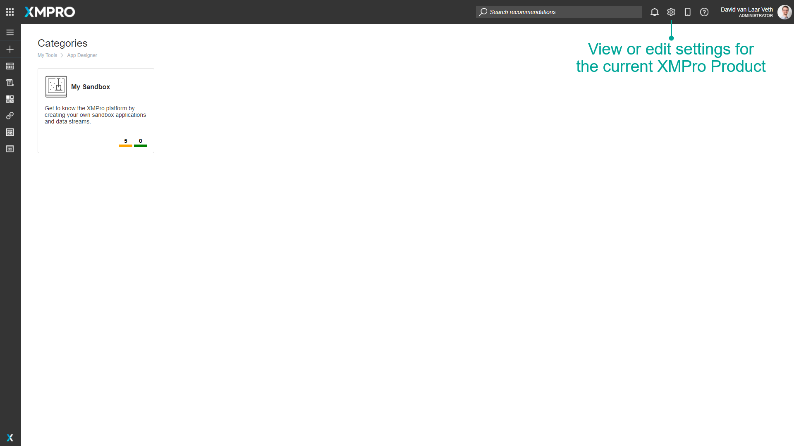
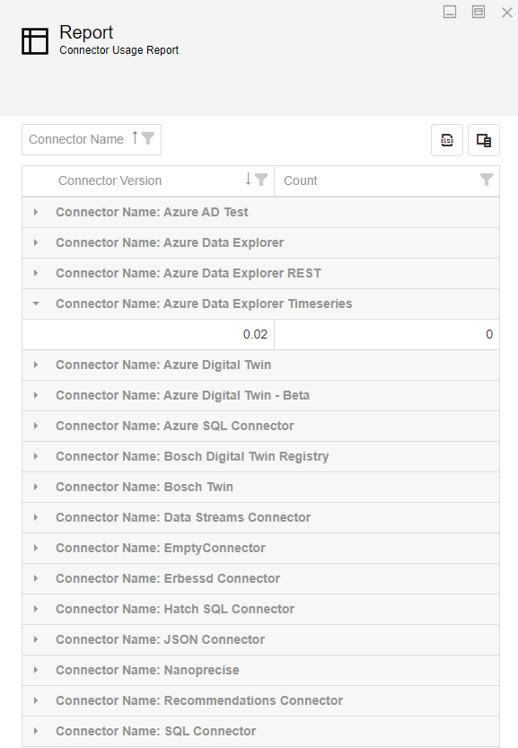
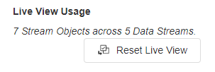
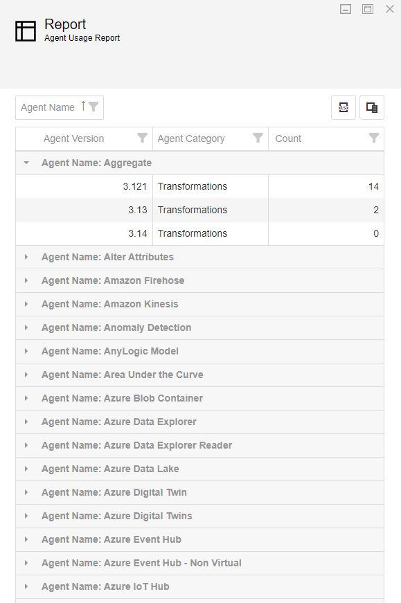

Manage Site Settings
These settings are used to configure each XMPro Product. To open the settings page, click on the gears icon in the grey bar at the top of the screen.
Note
Please note that the settings that you will see on this page depend on the role and access rights that have been assigned to you.

App Designer Settings
Security
Enable Audit Trail
Enabling this setting would cause logs to be created whenever changes are made to Recommendations, Connectors, and components of Applications. The logs will contain details about who made the change and when it was applied.
Encryption Key
The encryption key is used to encrypt and decrypt sensitive data configured in the user settings when they are stored or retrieved from the database, for example, passwords.
Integration
Integration Key
This key is used to verify Agents that integrate with the App Designer. The Integration Key will need to be copied into the Agent's configuration settings.
User Interface
Desktop Landing Page
Optionally override the default landing page to use a published Application for the whole company when using a desktop computer.
Mobile Landing Page
Optionally override the default landing page to use a published Application for the whole company when using a mobile device.
Enable Mobile App
Optionally override the default landing page to use a published Application for the whole company when using a desktop computer.
Mobile Landing Page
Optionally override the default landing page to use a published Application for the whole company when using a mobile device.
Enable Mobile App
Added v4.4.4
This defaults to true on new installations. Toggle it off to hide the mobile app icon on the toolbar.
This defaults to true on new installations. Toggle it off to hide the mobile app icon on the toolbar.
Metablocks
Added v4.4.0
Enable Metablocks
Enabling this setting results in Metablocks appearing in the Blocks blade.
Reports
Added v4.3.7
Standard reports give the administrator a view into where (which Applications) and how (which version) Connectors have been used. The information is presented in a grid that can be sorted, filtered, reorganized, and grouped. It can also be exported as an XLSX file.

Connector Usage Report
This report shows all loaded Connectors, their versions, and how many times each version is used in an Application, if any.
This master list shows the administrator which Connectors are installed and their utilization. This assists in identifying new Connectors or versions not yet added.
Connector Usage Details Report
This report shows the Applications in which a Connector version has been used. Additional information includes the Application's owner and category.
This detailed report assists in gauging the impact of upgrading one or more Connector versions.
Scripts
Embed Script
Added in v4.4.17, the supplied html script tag is inserted into every App Designer html page. Use this to load an external JavaScript script, such as to provide localized support or track user usage. For example, the below script embeds a chatbot into App Designer.
// example script to embed a fastbot trained on appropriate documentation
<script defer src="https://app.fastbots.ai/embed.js" data-bot-id="abc"></script>
To improve performance and ensure users always have the latest version of your script:
Use version parameters in your script URL to control caching:
<script defer src="https://example.com/your-script.js?v=1.0.2"></script>
Note
Update the version number whenever you modify the script. This ensures:
- Returning users get the new version immediately
- Users benefit from browser caching between sessions
- You control exactly when cache invalidation occurs
- Consider using content delivery networks (CDNs) for faster loading and improved caching.
- Use appropriate loading attributes like
deferorasyncto optimize page rendering:defer: Script executes after HTML parsing is complete (recommended for most cases)async: Script executes as soon as it's available, potentially during HTML parsing
For guidance on how to use this setting effectively, please contact your XMPro representative.
Data Stream Designer Settings
Security
Encryption Key
The encryption key is used to encrypt and decrypt sensitive data configured in the user settings of an Agent when they are stored or retrieved from the database, for example, passwords.
Enable Audit Trail
Enabling this setting would cause logs to be created whenever changes are made to Agents, Collections, and components of Data Streams. The records will contain details about who made the change and when it was applied.
User Interface
Enable InputMap Highlights
Enables the Canvas arrow highlight which is shown if the arrow's configuration doesn't have mappings. This is useful for demos where the complete configuration has intentionally not been provided.
Enable Stream Metrics
Enables the logging and display of stream metrics (Stream Load and Stream Errors) in Data Streams. Refresh the page for the setting to be applied to the Data Stream Canvas.
Behavior
Default Polling Interval (seconds)
Added v4.3.7
The default value that is used for the polling interval when a Polling Agent is added to a Streaming type Data Stream.
If there is no value provided for this setting, the polling interval defaults to 3600 seconds (1 hour).
Note
The default is applied when the Agent is added to the canvas. A change to this site setting will only take effect for Agents added afterward.
Live View Usage
Added v4.3.6
Over time, if users did not close the Live View, these open connections placed an additional load on the Data Stream Designer (DS) as the Stream Hosts continued to send live data back to DS. This reduced overall performance and reliability, and increased infrastructure costs.
We recommend that users always close the Live View of a published Data Stream before navigating away. When in doubt, an administrator can force a reset to close all open Live View connections.
The Live View Usage includes the following:
- The number of Stream Objects (Agents) with Live View enabled and the number of Data Streams affected.
- A button to reset the Live View usage.

Resetting the Live View will close any connections that may have been left open if a user closes the Data Stream canvas without first closing the Live View.
It will also stop any open Live View blades from receiving data. To start receiving data again, re-open the Live View and reselect the Stream Objects.
Refer to the Live View Usage Report for a list of Stream Objects and Data Streams that are preselected for Live View.
Note
A Stream Object with Live View enabled is an indicator that a user has viewed the data - it is not confirmation whether the user closed the connection.
Tip
The Live View issue is addressed in the v4.3.7 release:
- Open connections are closed regardless of how the Live View is closed (e.g. navigating away or closing the tab).
- All connections are closed when the Data Stream Designer app service is restarted.
If you've upgraded to v4.3.7, use the Reset Live View button once to ensure all connections are closed.
Reports
Added v4.3.7
Standard reports give the administrator a view into where (which Data Stream) and how (which version) Agents have been used. The information is presented in a grid that can be sorted, filtered, reorganized, and grouped. It can also be exported as an XLSX file.

Live View Usage Report
This report shows all Agents that have Live View enabled. Additional information includes the Data Stream name, Data Stream version, Data Stream owner, the Collection name, the Stream Object name, and whether the Data Stream is published.
This report along with the Reset option was useful prior to v4.3.7, to determine where connections may have been left open.
Agent Usage Report
This report shows all loaded Agents, their versions, their categories, and how many times a version is used in a Data Stream, if any.
This master list shows the administrator which Agents are installed and their utilization. This assists in identifying new Agents or versions not yet added.
Agent Usage Details Report
This report shows Data Streams in which an Agent version has been used. Additional information includes the Data Stream version, its owner, the Collection, and the Stream Object name.
This detailed report assists in gauging the impact of upgrading one or more Agent versions.
Agent Polling Interval Report
This report shows the polling intervals configured on all Agents that have the Polling Interval option. Additional information includes the Agent Name, Agent Category, Data Stream name, Data Stream version, Data Stream owner, the Collection name, the Stream Object name, and whether the Data Stream is published.
This master list empowers the administrator to locate those set too short (1s) that may be causing performance issues. 10 seconds may be appropriate during initial testing, but ill-advised in a QA or Production environment.
Subscription Manager Settings
Security
Hide Users Outside Business Role Branch
When enabled, users can see the information of users in their business role and any of its parent business roles up to the root. They cannot see any child or sibling business roles and their users.
For example, a user cannot tag/search users outside their business role tree path in a comment on a recommendation alert.
This defaults to true on new installations. Toggle it off to make all user information visible to all users in the company.
Warning
The exception for this setting is a user with an Administrator role for the Subscription Manager product. They can assign access to XMPro objects to any user or business role in the company.
Global Notification
Added v4.4.0
Global Administrators can display a global notification across the top of all products in the XMPro suite for a specific period. This aids in communicating important information to users, such as a notice advising of planned maintenance downtime and a hyperlink to release notes.
Choose a type of hint, warning, or error to set the notification icon and banner color. The banner can be dismissed for a session.
Discard "Global Notification" Settings
Clears all Global Notification settings and hides the current message, if any.
Type
This determines the icon and color of the notification banner. The options are a hint, warning, or error.
Message
A message of up to 500 characters is displayed in the notification banner. Basic text formatting, lists, and links are supported.
Show Now
Enabling this setting results in the notification banner being immediately shown across all products, and disables the Show On property.
Show On (your local time)
The date and time when the notification will be shown to users. It is stored as UTC, but displayed in the administrator's local time zone.
This setting is not available when Show Now is enabled.
Hide On (your local time)
An optional date and time when the notification should no longer be shown to users. It is stored as UTC, but displayed in the administrator's local time zone.
Leave blank if you want the message to be shown until it is manually cleared - either by clicking Discard "Global Notifications" Settings, clearing the Message or Show option.
Support
The email to which notifications will be sent if a user signs up to XMPro or makes a request, for instance, a request for a Subscription to a Product, or a request for a License.
Disable Email Notifications
Disables emails sent to the email address above for any reason. If email notifications are disabled then the Global Administrator will need to log in to Subscription Manager to check whether there are any pending requests.
Last modified: September 12, 2025